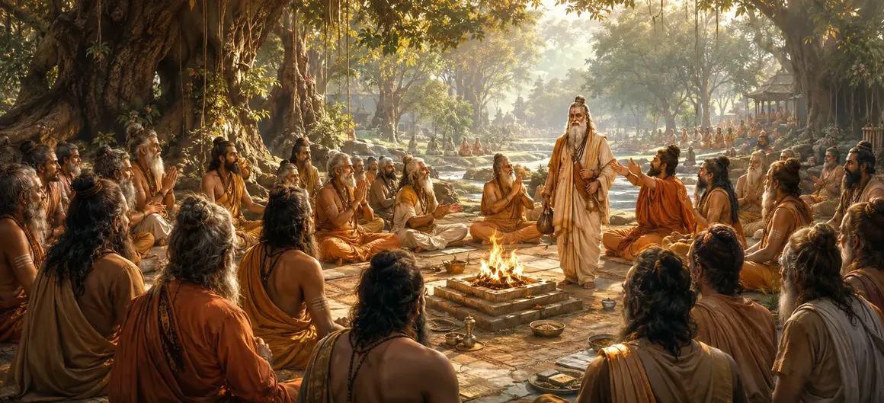

नैमिषा प्रकरण
वायवीय संहिता का तीसरा अध्याय पवित्र नैमिषा वन में प्रबुद्ध संतों की पौराणिक सभा को उजागर करता है।
यह पवित्र अभयारण्य दिव्य पृष्ठभूमि के रूप में कार्य करता है जहां शाश्वत आध्यात्मिक सत्य प्रकट होते हैं और समर्पित साधकों के बीच चर्चा की जाती है।
यह अध्याय शांत वातावरण और गहन आध्यात्मिक उत्साह को दर्शाता है जो उच्च ब्रह्मांडीय रहस्योद्घाटन के लिए जमीन तैयार करता है।
अध्याय 3 की मुख्य बातें
नैमिषा अभयारण्य
महान बलिदानों और आध्यात्मिक प्रवचनों के लिए प्रसिद्ध पवित्र वन को दर्शाया गया है।
शांत वातावरण
सर्वोच्च ज्ञान प्राप्त करने के लिए अनुकूल शांत वातावरण को दर्शाता है।
पवित्र सभा
मुक्ति की खोज में प्रख्यात संतों को एकजुट करता है।
प्रवचन मैदान
अध्याय 2 के गहन प्रश्नों का उत्तर देने के लिए भौतिक चरण निर्धारित करता है।
ईश्वरीय कृपा
जंगल में आध्यात्मिक ऊर्जा की स्पष्ट उपस्थिति पर प्रकाश डाला गया।
वायु की प्रस्तावना
शिक्षा देने के लिए भगवान वायु के आगमन की कथा तैयार करता है।
इस अध्याय में मुख्य विषय
नैमिषा वन की महिमा
यह पाठ नैमिषा वन की बेजोड़ पवित्रता का गुणगान करता है, एक पौराणिक स्थल जिसकी कई पुराणों में आध्यात्मिक शक्ति के केंद्र के रूप में प्रशंसा की गई है।
ऐसा माना जाता है कि यहां की गई आध्यात्मिक साधनाएं अतीत की तपस्या के तीव्र स्पंदनों के कारण कई गुना अधिक परिणाम देती हैं।
समर्पित संतों का समागम
विभिन्न क्षेत्रों के महान ऋषि और तपस्वी नैमिषा में एकत्र होते हैं, जो उच्च सत्य को समर्पित एक असाधारण सभा बनाते हैं।
उनका सामूहिक समर्पण एक ऐसा माहौल बनाता है जहां सांसारिक विकर्षण पूरी तरह से खत्म हो जाते हैं।
शांत एवं पवित्र वातावरण
जंगल को शांति के अभयारण्य के रूप में वर्णित किया गया है जहां सर्वोच्च पवित्रता की उपस्थिति में प्राणियों के बीच प्राकृतिक शत्रुता भी समाप्त हो जाती है।
नदियाँ पवित्रता के साथ बहती हैं और सरसराती पत्तियाँ पवित्र मंत्रों की मौलिक प्रतिध्वनि को प्रतिध्वनित करती प्रतीत होती हैं।
दिव्य रहस्योद्घाटन की तैयारी
ध्यानमग्न शांति में बैठे ऋषियों के साथ, कथा एक उत्कृष्ट प्रवचन के लिए दृश्य तैयार करती है जो उनके सभी पिछले प्रश्नों का उत्तर देगा।
यह अध्याय आगे आने वाली महत्वपूर्ण शिक्षाओं के लिए आवश्यक प्रत्याशा का निर्माण करता है।
सामान्य प्रयोजन में साधकों को एकजुट करना
नैमिषा प्रकरण इस बात को रेखांकित करता है कि आध्यात्मिक समुदाय में एक साथ आने से व्यक्तिगत भक्ति और सामूहिक समझ कैसे बढ़ती है।
संतों की साझा आकांक्षा एक शक्तिशाली चुंबक के रूप में कार्य करती है जो दिव्य कृपा को उनके बीच खींचती है।
प्रश्नों को शिक्षाओं से जोड़ना
नैमिषा के पवित्र भूगोल में अध्याय 2 के प्रश्नों को आधार बनाकर, पाठ आगामी गहन उत्तरों के लिए पूछताछ करता है।
यह दिव्य दूत के आगमन की ओर सुचारू रूप से परिवर्तित होता है जो ज्ञान प्रदान करेगा।
अध्याय 4 की ओर
नैमिषा की पवित्र सेटिंग स्थापित होने के साथ, पाठ सीधे अध्याय 4, 'वायु का आगमन' में प्रवाहित होता है।
अध्याय 4 में बताया गया है कि कैसे भगवान वायु भगवान शिव की सर्वोच्च शिक्षाओं को प्रसारित करने के लिए सभा में आते हैं।
अध्याय 3 की प्रमुख शिक्षाएँ
पवित्र अभयारण्य
पवित्र स्थान आध्यात्मिक चिंतन की गहराई और शक्ति को बढ़ाते हैं।
सामूहिक फोकस
संयुक्त आध्यात्मिक प्रयास दैवीय कृपा के लिए एक आदर्श पात्र बनाता है।
सामुदायिक शक्ति
सत्संग और पवित्र समागम चेतना को व्यक्तिगत सीमाओं से ऊपर उठा देते हैं।
कथा प्रवाह
पिछले प्रश्नों को आगामी दिव्य उत्तरों के साथ सहजता से जोड़ता है।
शुद्ध पर्यावरण
बाहरी शांति मुक्ति के लिए आवश्यक आंतरिक स्पष्टता को प्रतिबिंबित करती है।
दूत आगमन
अध्याय 4 में भगवान वायु की गहन व्याख्या की अपेक्षा निर्धारित की गई है।
आध्यात्मिक चिंतन
नैमिषा वन प्रकरण हमें सिखाता है कि सत्य की खोज शांति, पवित्रता और पवित्र संगति के वातावरण में फलती-फूलती है। ईमानदार साधकों के साथ एकत्रित होने से, हमारी अपनी आध्यात्मिक आकांक्षाएँ शक्ति और स्पष्टता प्राप्त करती हैं।
अध्याय 3 का संदेश जीना
अपने व्यक्तिगत ध्यान और पवित्र ग्रंथों के अध्ययन के लिए शांतिपूर्ण, उत्थानशील वातावरण की तलाश करें।
अपनी समझ और समर्पण को गहरा करने के लिए साथी साधकों के साथ आध्यात्मिक संगति (सत्संग) में शामिल हों।
आंतरिक शांति विकसित करें जो नैमिषा जंगल के शांत अभयारण्य को प्रतिबिंबित करती है।
प्रमुख आध्यात्मिक अवधारणाएँ
नैमिषा वन की परम महिमा एवं पवित्रता
प्रबुद्ध संतों की पवित्र संगति और सभा।
दिव्य ज्ञान के लिए अनुकूल एकांत और शांत अभयारण्य।
परम ज्ञान आगमन के लिए सेटिंग की सक्रिय तैयारी।
भगवान वायु के आगमन की ओर ले जाने वाली कथात्मक पृष्ठभूमि।
सामूहिक आध्यात्मिक आकांक्षा की विशाल शक्ति।
अध्याय सारांश
वायवीय संहिता अध्याय 3 नैमिषा प्रकरण प्रस्तुत करता है। पवित्र नैमिषा वन में ऋषियों की पौराणिक सभा, शांत और पवित्र वातावरण और दिव्य रहस्योद्घाटन की तैयारी का वर्णन करते हुए, यह अध्याय पिछली पूछताछ को आगामी शिक्षाओं के साथ जोड़ता है। यह शिव पुराण की शानदार आध्यात्मिक यात्रा को जारी रखते हुए, अध्याय 4, 'वायु का आगमन' की प्रत्यक्ष प्रस्तावना के रूप में कार्य करता है।
अक्सर पूछे जाने वाले प्रश्न
1. वायवीय संहिता अध्याय 3 का मुख्य विषय क्या है?
अध्याय 3 पवित्र नैमिषा वन में ऋषियों की पौराणिक सभा और दिव्य रहस्योद्घाटन प्राप्त करने के लिए वायुमंडलीय सेटिंग पर केंद्रित है।
2. नैमिषा वन पौराणिक साहित्य में क्यों महत्वपूर्ण है?
नैमिषा वन को एक अत्यंत पवित्र अभयारण्य के रूप में प्रतिष्ठित किया जाता है जहां महान आध्यात्मिक प्रवचन, बलिदान और शाश्वत ज्ञान का प्रसारण होता है।
3. यह अध्याय पिछली पूछताछ से कैसे जुड़ता है?
यह भौतिक और आध्यात्मिक सेटिंग प्रदान करता है जहां संतों द्वारा उठाए गए प्रश्नों को दिव्य प्रवचन के माध्यम से संबोधित किया जाता है।
4. नैमिषा वन सभा में कैसा माहौल रहता है?
सभा में गहन शांति, गहन भक्ति, कठोर चिंतन और दैवीय कृपा का वातावरण व्याप्त है।
5. नैमिषा कांड के दौरान संतों की क्या भूमिका थी?
वे समर्पित श्रोता और सूत्रधार के रूप में कार्य करते हैं जो भगवान शिव के सर्वोच्च ज्ञान को संरक्षित और प्रचारित करते हैं।
6. अध्याय 3 के बाद नेविगेशन के लिए अगला अध्याय कौन सा है?
नेविगेशन के लिए अगला अध्याय अध्याय 4 है, जिसका शीर्षक 'वायु का आगमन' है।
"नैमिषा के शांत अभयारण्य में, साधक शुद्ध सद्भाव में इकट्ठा होते हैं, दिव्य ज्ञान की हवा प्राप्त करने के लिए तैयार एक पवित्र बर्तन बनाते हैं।"
वायवीय संहिता के माध्यम से जारी रखें
अध्याय 3 नैमिषा प्रकरण का विवरण देता है। अध्याय 4, वायु का आगमन जारी रखें।